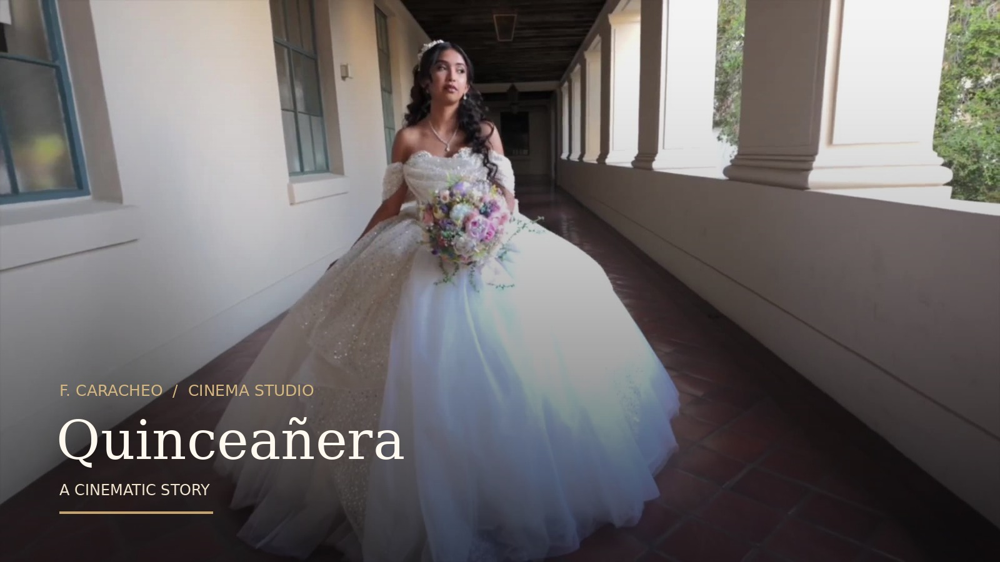

Wedding Films
Historias de amor
Próximamente: nuevas producciones en esta colección.
Historias auténticas, imágenes inolvidables. Capturamos la emoción de cada celebración con una mirada artística y cinematográfica.
Descubre nuestro trabajoCada historia merece ser contada con belleza y autenticidad. Desde los pequeños detalles hasta las emociones más grandes, transformamos momentos únicos en recuerdos que trascienden el tiempo.
Cada historia merece sentirse como una película. Explora nuestras producciones.
Una celebración inolvidable, contada a través de la luz, la emoción y el movimiento.
Video de muestra integrado en esta vista previa. Presiona reproducir para verlo.
Próximamente: nuevas producciones en esta colección.

Mira nuestro primer cortometraje destacado de quinceañera.

Próximamente: nuevas producciones en esta colección.
Cobertura artística y profesional para preservar cada momento importante.
Solicitar cotizaciónPelículas de celebración con edición cuidada y una narrativa emotiva.
Solicitar cotizaciónUna cobertura integral con una estética coherente en fotografía y película.
Solicitar cotización¿Ya recibiste tu galería? Entra a nuestro espacio de clientes para disfrutar las fotografías de tu evento y seleccionar tus favoritas, cuando esta función esté habilitada en tu galería.
Acceso a clientes · Pixieset ↗Las galerías y sus permisos se administran de forma segura desde Pixieset.
Cuéntanos qué estás planeando. Nos encantará conocer tu historia.
Escribir por WhatsApp